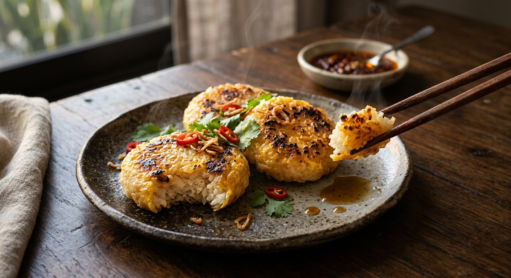

Salted sticky rice pressed into patties, charred over coals, dipped in beaten egg and grilled until golden — the winter snack of Isaan, and the one dish born to rescue yesterday's rice.

จี่ is the Isaan verb for pressing something against heat — the rice is stuck straight onto the coals, no pan, no oil. Khao jee is what the village did with the sticky rice left over from breakfast: pat it into rounds, salt it, roast it hard, then bathe it in beaten egg and grill it a second time until the outside is a golden, slightly charred shell and the inside is still soft. Wongnai's home version does it in an oven or a teflon pan for city kitchens; the taste is the same argument between crisp egg and warm, chewy rice.
The dish has its own festival. In the third lunar month Isaan villages hold บุญข้าวจี่, the Bun Khao Jee merit-making: families bring rice, eggs and firewood to the temple, shape and grill the rice together, and offer it to the monks. TrueID retells the legend behind it — a water-carrier named นางปุณณา (Punna), who roasted her rice with bran so it would survive her long daily walk, one day met the Buddha and offered him her little ball of grilled rice. He ate all of it in front of her and taught that merit is measured by faith, not by the value of the offering. She attained sotapanna on the spot. That is why khao jee still tastes like an offering.
It is also a canvas. TrueID lists the modern variations: rice mixed with coconut cream, rice studded with pumpkin, khao jee stuffed with หมูยอ (fermented pork sausage), grilled pork, or ปลาร้า (fermented fish). Wongnai even has a city cousin, ข้าวจี่ทอด — the same salted, egg-washed rice balls, but deep-fried instead of grilled and eaten with pounded fermented fish relish.
| Thai | English | Amount |
|---|---|---|
| ข้าวเหนียวหุงสุก | Sticky rice, cooked | 250 g |
| เกลือป่น | Salt | ½ tsp |
| ไข่ไก่ | Chicken eggs | 2 |
| ซีอิ๊วขาว | Light soy sauce | 1 tsp |
| พริกไทยป่น | Ground white pepper | ½ tsp |
The street-seller batch (TrueID, แม่ซี น้องมดดี้): 1 kg of ข้าวเหนียวเขี้ยวงู (snake-fang sticky rice) washed and — if it is old-crop — soaked overnight, steamed 40 minutes with a flip at 20 and a splash of hot water; then 250 ml coconut cream warmed with 1 tsp salt (never boiled — it must not split) folded into the hot rice. The rice is pressed through an 8 cm lid mould, not packed tight. The egg wash is 2 duck eggs and 3 chicken eggs beaten with 2 tbsp green-cap seasoning sauce, 1 tsp seasoning powder and 1 tsp sugar, and the finished pieces are brushed with unsalted butter. The Aroifin batch: same 1 kg of rice and 250 ml coconut milk, but the wash is 3 chicken eggs and 2 duck eggs with ½ tbsp seasoning powder and 2 tbsp light soy — 15 servings, about an hour and a quarter start to finish.
Coconut cream in the rice. TrueID's selling recipe and Aroifin both fold warm, salted coconut cream into the steamed rice before shaping — the kathi version, softer and sweeter, and the one that stays soft all day on a market stall. Wongnai's home version and the temple method salt plain rice and skip the coconut entirely. The plain one is the older dish; the kathi one is the commercial upgrade.
The egg seasoning. Wongnai flavours the wash with light soy and white pepper. TrueID's vendor batch uses green-cap seasoning sauce, seasoning powder and sugar. Aroifin splits the difference with seasoning powder and light soy. Three washes, three salts.
Chicken or duck eggs. Wongnai uses chicken eggs alone. TrueID and Aroifin blend duck and chicken eggs for a deeper colour and a richer coat. Duck eggs give the golden-brown shell sellers photograph.
Butter or not. Only TrueID's selling recipe finishes the grilled rice with a brush of unsalted butter on both sides. The temple and home versions serve it dry from the fire.
Charcoal or oven. TrueID, Aroifin and the temple all grill over charcoal. Wongnai, writing for city kitchens, grills on an oven rack with top-and-bottom heat or in a teflon pan — and claims the result is indistinguishable.
Grilled or fried. Wongnai's second recipe is ข้าวจี่ทอด: the same salted rice balls and egg wash, but deep-fried golden and eaten with ปลาร้าบอง instead of grilled. Same name, different fire — the dish's proof of concept for apartments without a garden to burn things in.
This recipe is translated from the following Thai-language sources. Where they disagree, we've said so.
1. Wongnai — "วิธีทำ “ข้าวจี่” เมนูอาหารอีสานทำง่าย ๆ ได้ที่บ้าน" (the recipe used here) — wongnai.com
2. TrueID Food — "สูตรทำ ข้าวจี่ ข้าวเหนียวจี่ สูตรทำขาย เผยเคล็ดลับข้าวเหนียวนุ่มนาน ไม่แห้ง ไม่แข็ง" by แม่ซี น้องมดดี้ (the street-seller batch) — food.trueid.net
3. Aroifin — "วิธีทำ ข้าวจี่ทาไข่ ขนมพื้นบ้านอีสาน ทำง่าย อร่อยอยู่ท้อง" (the coconut-milk batch and grill tips) — aroifin.com
4. TrueID — ""ข้าวจี่" ร้อนๆ หอมๆ เอาอะไรมาแลกก็ไม่ยอม" (the Bun Khao Jee festival and the Punna legend) — food.trueid.net
5. Wongnai — "แจกสูตรฟรี! “ข้าวจี่ทอด” เมนูทอดแบบประยุกต์ กินคู่กับอะไรก็ฟิน!" (the deep-fried variant) — wongnai.com